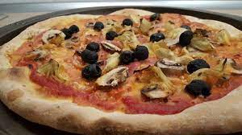

To make the dough, whisk yeast and water in a heatproof jug. Stand for 5 minutes or until frothy.
Place flour and salt in a large bowl. Make a well in the centre. Pour in the yeast mixture and oil. Using your hands or a spatula, mix the dough until it comes together and is smooth. Turn out onto a lightly floured work surface and knead briefly.
Place dough in a lightly oiled bowl and cover with cling wrap. Set aside in a warm place to rise for 30 minutes to an hour until it doubles in size.
Turn dough out onto a lightly floured surface and knead gently for another 5 minutes or until smooth. Divide dough in half, wrap one half in plastic wrap and freeze for another use. Roll out remaining dough half to create a 30 cm x 20 cm oval. Sprinkle a little flour on the bench before rolling to prevent dough from sticking. Transfer base to a baking paper lined tray.
Preheat oven to 230°C / 210°C fan-forced.
Spread pizza base with the pizza sauce. Scatter with a small handful of Perfect Pizza cheese. Top with mushroom, ham, olives and artichokes. Scatter over the remaining cheese.
Bake for 20-25 minutes or until cheese is melted and golden and base is crisp.